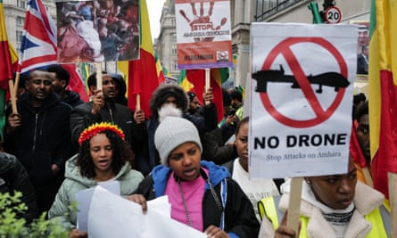

Almost 1,000 civilians have been killed and hundreds more injured in military drone attacks across Africa as the proliferation of unmanned aerial vehicles continues unchecked on the continent, according to a report.
At least 50 separate deadly strikes by armed forces in Africa have been confirmed during the three years up to November 2024, with analysts describing a “striking pattern of civilian harm” with little or no accountability.
Although the rapid growth of armed drones deployed by Ukraine and Russia receives significant scrutiny, scant focus is being paid to the escalating use in Africa of a new breed of imported cheaper drones, such as Turkey’s Bayraktar TB2 , said Cora Morris of campaign group Drone Wars UK , which on Monday published a report on the growth of armed drones in Africa, called Death on Delivery.
“This must change. Unless the international community moves rapidly towards developing and implementing a new control regime, we are highly likely to see more examples of the killing of civilians from the use of armed drones,” said Morris.
So far, the use of armed drones has been confirmed in at least six conflicts in Africa: Sudan, Somalia, Nigeria, Mali, Burkina Faso and Ethiopia, where most attacks were seen.
Drone strikes by the Ethiopian armed forces against adversaries such as the Tigray People’s Liberation Front were found to have killed more than 490 civilians in 26 separate attacks.
Members of the Amhara Association protest in London against what they describe as genocide in the Amhara region of Ethiopia, 10 November 2024.Photograph: Zuma Press, Inc./Alamy
Elsewhere, at least 64 civilians died in nine separate drone strikes conducted by Malian armed forces battling separatist groups in the north of the country. In neighbouring Burkina Faso, researchers found more than 100 civilians have been killed in drone strikes carried out by the country’s military.
The Drone Wars UK report said the failure to control the proliferation of armed drones in Africa had led to more than 940 civilians being killed since November 2021, a figure it described as conservative.
Most armed drones in Africa are imported from Turkey, along with China and Iran, with researchers sounding the alarm over the growing popularity of “medium altitude, long endurance” (MALE) drones.
These can be flown remotely for many hours over a large distance, conducting surveillance as well as airstrikes.
The proliferation – and risks – of armed drones in African conflicts has been witnessed in Sudan’s civil war with their use in highly populated areas such as markets in the capital, Khartoum, having “grave” consequences for civilians. Iranian, Chinese and Turkish drones have been deployed by the Sudanese military while its adversary – the Rapid Support Forces (RSF) – has used UAE-supplied drones, the report said.

People run after hearing an explosion, reportedly from a crashed drone, in the city of al-Qadarif in east Sudan on 11 July 2024.Photograph: AFP/Getty Images
In Burkina Faso, Bayraktar TB2s have been deployed by Burkinabè military forces in their struggle against a jihadist insurgency. State-sponsored media regularly celebrated “neutralisations” of terrorists using what it described as sophisticated, precise drone technologies.
However, accounts from sources on the ground often yield a different narrative, pointing to frequently high civilian deaths. One incident in the country’s Sahel region in August 2023, saw drones strike a market in the village of Bouro, killing at least 28 civilians .
The report said: “The Burkinabè government’s wholesale celebration of strikes like that on Bouro’s market rests upon a perception of drone warfare as an efficient, advanced development in the country’s military operations, signifying a technically sophisticated arsenal operated by a vigilant, effective government with a firm grip on its territories.
“However, on-the-ground research quickly reveals the falsity of this picture: exposing erratic bombings of innocent communities, which sow only further destruction and insecurity.”